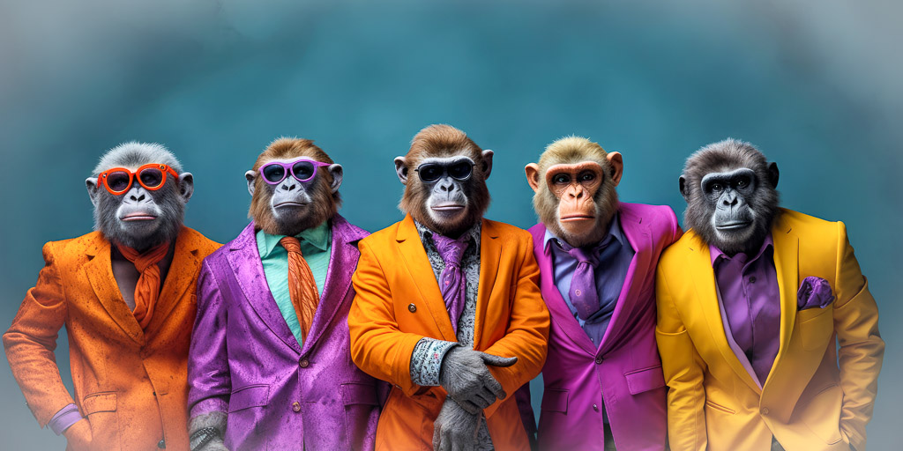
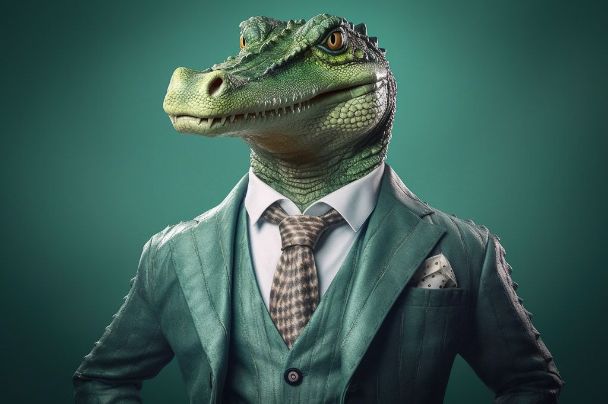
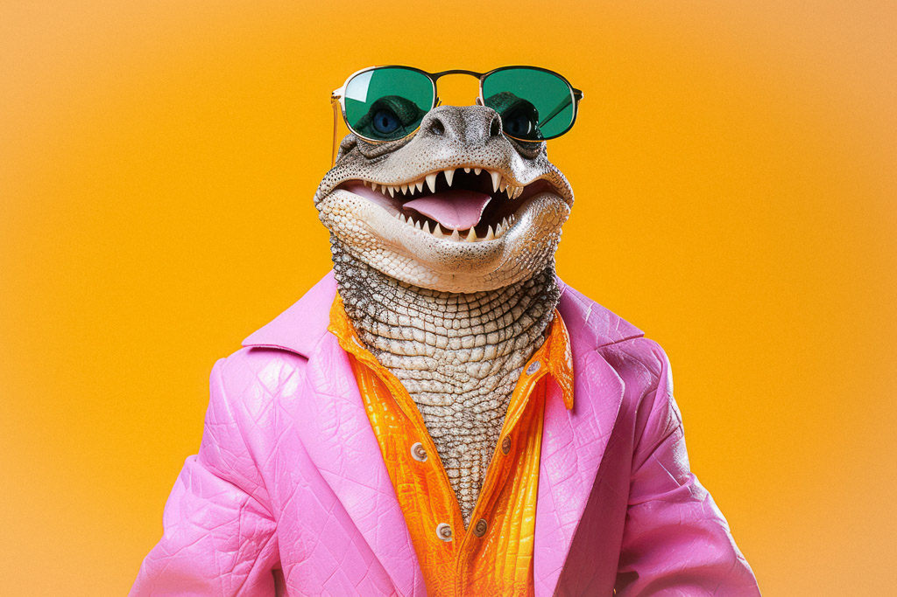
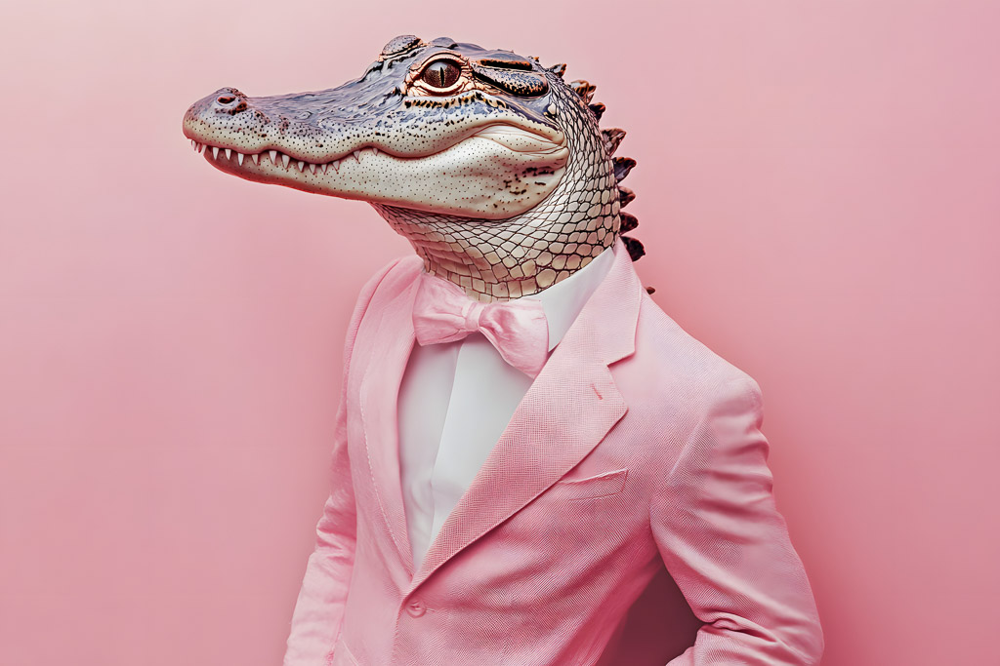

Welcome to the Most Hip Fullstack Zoo!
Bears
- Ollie
- Mona

Learn more about bears
Giraffes
- Frankie
- Coconut


Learn more about giraffes
Lions
- Mella
- Karl


Monkeys
- Cookie
- Earl
- Banana Pudding

Learn more about monkeys
Alligators
- Wren
- Aspen
- Mika



Learn more about alligators